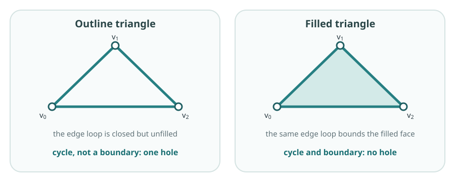
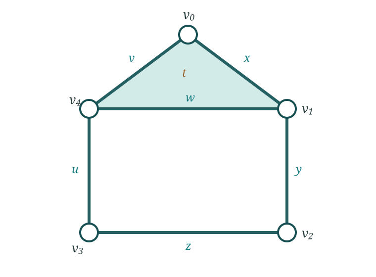

Foundation 2B: Chain spaces and boundary maps
The pictures in 2A are useful for small familiar spaces, but inspection does not scale to a large or high-dimensional complex. We already have a finite simplicial complex \(K\): its simplices record the pieces present in each dimension and their face relations. That combinatorial information is enough to calculate simplicial homology, without relying on how \(K\) happens to be drawn. Algebra makes the calculation systematic and reproducible. Chains and boundary maps turn the geometric question into kernels, images and dimensions.
Coefficients and chain spaces
Fix a field \(\mathbb F\), usually \(\mathbb F_2=\{0,1\}\) in the first calculations. The \(p\)-chain space \(C_p(K;\mathbb F)\) is the vector space with the \(p\)-simplices of \(K\) as a basis. A chain is therefore a formal linear combination of \(p\)-simplices.
Why chain spaces? The complex \(K\) contains pieces of several dimensions. \(C_p\) isolates its \(p\)-simplices and lets us combine them into candidate \(p\)-dimensional structures. We are not moving through \(K\); we are recording one dimension of it in a vector space so that linear algebra can be used.
Over \(\mathbb F_2\), a simplex is either present or absent. Adding a simplex to itself gives coefficient \(1+1=0\), so repeated simplices cancel.
Boundary maps, cycles and boundaries
The boundary map
\[ \partial_p:C_p(K;\mathbb F_2)\to C_{p-1}(K;\mathbb F_2) \]
sends a simplex to the sum of its faces one dimension lower, called its codimension-one faces. Thus
Where downward closure is used. If a simplex belongs to \(K\), each face in its boundary also belongs to \(K\). Therefore \(∂_p\) really does land in \(C_{p-1}(K;\mathbb F_2)\). Without downward closure, taking a boundary could leave the chain spaces and this algebra would not be defined.
Why move between dimensions? To decide whether a \(p\)-chain is closed, we must inspect its exposed \((p-1)\)-dimensional faces. To decide whether it is already filled, we ask whether it is produced as the boundary of a \((p+1)\)-chain. Boundary maps make both comparisons possible.
\[ \partial_1[v_0,v_1]=[v_0]+[v_1], \]
and
\[ \partial_2[v_0,v_1,v_3]=[v_0,v_1]+[v_1,v_3]+[v_3,v_0]. \]
Linearity extends the definition to every chain.
The vector spaces and boundary maps form the chain complex
\[ \cdots\longrightarrow C_2(K;\mathbb F_2) \xrightarrow{\partial_2}C_1(K;\mathbb F_2) \xrightarrow{\partial_1}C_0(K;\mathbb F_2) \longrightarrow 0. \]
It is an algebraic record of \(K\) organised by simplex dimension, with each map recording how one layer is attached to the layer below.
For an edge chain forming a closed loop, each vertex appears twice in the boundary and cancels over \(\mathbb F_2\). Thus a cycle is a chain \(z\in C_p\) satisfying
\[ \partial_pz=0. \]
Why does a closed cycle map to zero? In an edge loop every vertex occurs twice, once from each adjacent edge, and the two copies cancel over \(\mathbb F_2\). More generally, the lower-dimensional faces of a closed chain cancel in pairs. Zero means that no exposed boundary remains; it does not mean that the chain itself is empty.
The cycle space is \(Z_p=\ker\partial_p\). Here the kernel contains the chains that the boundary map sends to zero.
Kernel intuition. In first-year linear algebra, a kernel contains the inputs a map sends to zero. For \(\partial_p\), those are the \(p\)-chains with no remaining \((p-1)\)-dimensional boundary: the closed \(p\)-dimensional structures.
Notation. The letter \(Z\) comes from the German Zyklus, meaning cycle; \(z\) denotes one particular cycle in the cycle space \(Z_p\). The letter \(B\) stands for boundaries.
Applying two consecutive boundary maps always gives zero:
\[ \partial_{p-1}\partial_p=0. \]
Informally, the boundary of a filled region has no remaining boundary of its own. Every boundary is therefore a cycle, so \(B_p\) is a subspace of \(Z_p\):
\[ B_p=\operatorname{im}\partial_{p+1}\subseteq\ker\partial_p=Z_p. \]
Image intuition. An image contains everything a map can produce. Thus \(\operatorname{im}\partial_{p+1}\) contains precisely the \(p\)-cycles produced as boundaries of the available \((p+1)\)-chains. They are closed, but already filled.
Let
\[ z=[v_0,v_1]+[v_1,v_2]+[v_2,v_0] \]
be the edge loop in the figure. In both complexes, \(\partial_1z=0\), so \(z\in\ker\partial_1\). In the outline complex there is no 2-simplex whose boundary is \(z\), so \(z\notin\operatorname{im}\partial_2\) and the loop represents a hole. In the filled complex the face \(\sigma=[v_0,v_1,v_2]\) is present and
\[ \partial_2\sigma =[v_0,v_1]+[v_1,v_2]+[v_2,v_0]=z. \]
The same edge loop is now a boundary and does not represent a hole.

Homology now treats cycles as equivalent when their difference is an available boundary. For a cycle \(z\), its homology class is
\[ [z]=z+B_p=\{z+b:b\in B_p\}. \]
Thus \([z]=[z']\) exactly when \(z-z'\in B_p\). In particular, every boundary belongs to the zero class. The collection of these classes is the quotient
\[ \boxed{ H_p(K;\mathbb F) =\frac{Z_p(K;\mathbb F)}{B_p(K;\mathbb F)} =\frac{\ker\partial_p}{\operatorname{im}\partial_{p+1}} }. \]
Why \(H_p=\ker\partial_p/\operatorname{im}\partial_{p+1}\)? The kernel finds every closed cycle, including cycles already explained as boundaries. Taking the quotient by the image treats those filled cycles as zero and identifies cycles that differ only by an available boundary. What remains is the homology class of each unfilled structure.
Over a field this is a vector space, and its dimension is the Betti number
\[ \beta_p=\dim H_p(K;\mathbb F). \]
A representative cycle is one concrete cycle in a homology class. It is not uniquely determined: adding a boundary changes the representative without changing the class.
The two highlighted torus loops make independence concrete. Let \(m\) go around the tube and \(\ell\) go around the central tunnel of the torus surface \(T^2\). Neither is the boundary of a surface contained in the torus, and neither can be changed into the other by adding such a boundary. In a triangulation of the torus, boundary-matrix reduction therefore leaves two basis classes
\[ [m],\ [\ell]\in H_1(T^2;\mathbb F_2). \]
Every one-dimensional class is one of \([0],[m],[\ell],[m]+[\ell]\). Only the zero combination is trivial, so the two classes are independent and \(\dim H_1=2\).
Computing the ideal torus. Sampling is not required. One can triangulate the continuous torus and use the simplicial chain complex above, or use a smaller cell decomposition with one vertex, two edges and one 2-cell. Both give \((\beta_0,\beta_1,\beta_2)=(1,2,1)\). For sampled data, by contrast, a complex must first be reconstructed and the result is evidence about an underlying torus rather than a calculation on the torus itself.
After ordering the simplices, each boundary map is represented by a matrix. One column records the boundary of one basis simplex; rows correspond to basis simplices one dimension lower.
Matrix reminder. A matrix represents a linear map after bases and their orders are chosen. Reading one column asks what the map does to the corresponding basis simplex.
For the triangular face \(t=[v_0,v_1,v_3]\), the column of \([\partial_2]\) has a \(1\) in the rows for \([v_0,v_1]\), \([v_1,v_3]\) and \([v_3,v_0]\), and zero elsewhere. Matrix rank then supplies
\[ \dim Z_p=\dim C_p-\operatorname{rank}\partial_p, \qquad \dim B_p=\operatorname{rank}\partial_{p+1}. \]
Hence
\[ \beta_p =\dim C_p-\operatorname{rank}\partial_p-\operatorname{rank}\partial_{p+1}. \]
ExampleThe house: a complete homology calculation
The house is a useful first calculation because it has two visible edge cycles and one filled face. One cycle becomes a boundary while the other survives. A larger example would lengthen the matrices without introducing a new idea.

Use the bases
\[ C_2=\langle t\rangle,\qquad C_1=\langle x,y,z,u,v,w\rangle,\qquad C_0=\langle v_0,v_1,v_2,v_3,v_4\rangle, \]
where
\[ \begin{aligned} x&=[v_0,v_1], & y&=[v_1,v_2], & z&=[v_2,v_3],\\ u&=[v_3,v_4], & v&=[v_4,v_0], & w&=[v_4,v_1], \end{aligned} \]
and \(t=[v_0,v_1,v_4]\) is the filled roof. Over \(\mathbb F_2\),
\[ \partial_2t=x+v+w, \]
and the edge boundaries are
\[ \begin{aligned} \partial_1x&=v_0+v_1, & \partial_1y&=v_1+v_2, & \partial_1z&=v_2+v_3,\\ \partial_1u&=v_3+v_4, & \partial_1v&=v_4+v_0, & \partial_1w&=v_4+v_1. \end{aligned} \]
With the displayed basis orders, the boundary matrices are
\[ [\partial_1]= \begin{bmatrix} 1&0&0&0&1&0\\ 1&1&0&0&0&1\\ 0&1&1&0&0&0\\ 0&0&1&1&0&0\\ 0&0&0&1&1&1 \end{bmatrix}, \qquad [\partial_2]= \begin{bmatrix}1\\0\\0\\0\\1\\1\end{bmatrix}. \]
Row reduction gives
\[ \operatorname{rank}\partial_1=4, \qquad \operatorname{rank}\partial_2=1. \]
The two independent edge cycles may be represented by
\[ r=x+v+w \quad\text{(roof)}, \qquad q=y+z+u+w \quad\text{(room)}. \]
Both have zero boundary. Hence \(Z_1=\langle r,q\rangle\). But \(r=\partial_2t\), so \(B_1=\langle r\rangle\). The roof cycle is explained by the filled triangular face; the room cycle is not. Therefore
\[ H_1=Z_1/B_1=\langle[q]\rangle, \qquad \beta_1=1. \]
This example also shows directly why the boundary of a boundary is zero:
\[ \begin{aligned} \partial_1\partial_2t &=\partial_1(x+v+w)\\ &=(v_0+v_1)+(v_4+v_0)+(v_4+v_1)=0. \end{aligned} \]
Every roof vertex occurs twice and cancels. Geometrically, the edge loop bounding the filled roof has no endpoints left over.
Finally, rank-nullity gives all three Betti numbers:
\[ \begin{aligned} \beta_0&=\dim C_0-\operatorname{rank}\partial_1=5-4=1,\\ \beta_1&=\dim C_1-\operatorname{rank}\partial_1- \operatorname{rank}\partial_2=6-4-1=1,\\ \beta_2&=\dim C_2-\operatorname{rank}\partial_2=1-1=0. \end{aligned} \]
Thus the house has one connected component, one unfilled one-dimensional cycle and no two-dimensional cavity.
For a finite complex, the Euler characteristic is the alternating sum of its simplex counts. If \(f_p\) is the number of \(p\)-simplices, then
\[ \chi(K)=\sum_{p\geq0}(-1)^p f_p =\sum_{p\geq0}(-1)^p\beta_p. \]
For the house, \(\chi=5-6+1=0\), agreeing with \(\beta_0-\beta_1+\beta_2=1-1+0\).
When is \(\chi\) useful? It is a quick check when simplex counts are easy, and it can recover one unknown Betti number when the others are known. It is more compressed than the Betti numbers: different spaces can have the same Euler characteristic, so it cannot say which dimensions contain the holes.
You are ready to continue when you can read a boundary-matrix column, explain \(\partial^2=0\), and obtain cycles, boundaries and Betti numbers from kernels, images and ranks.